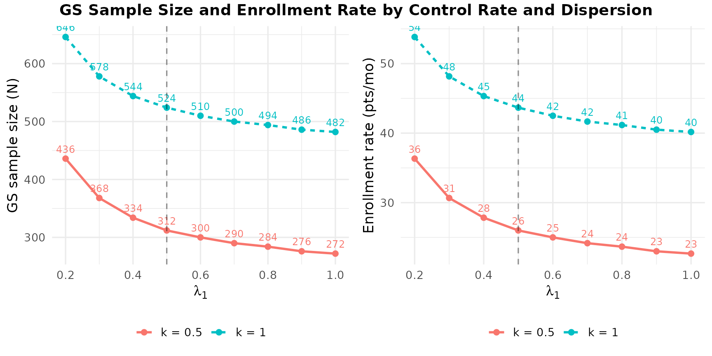
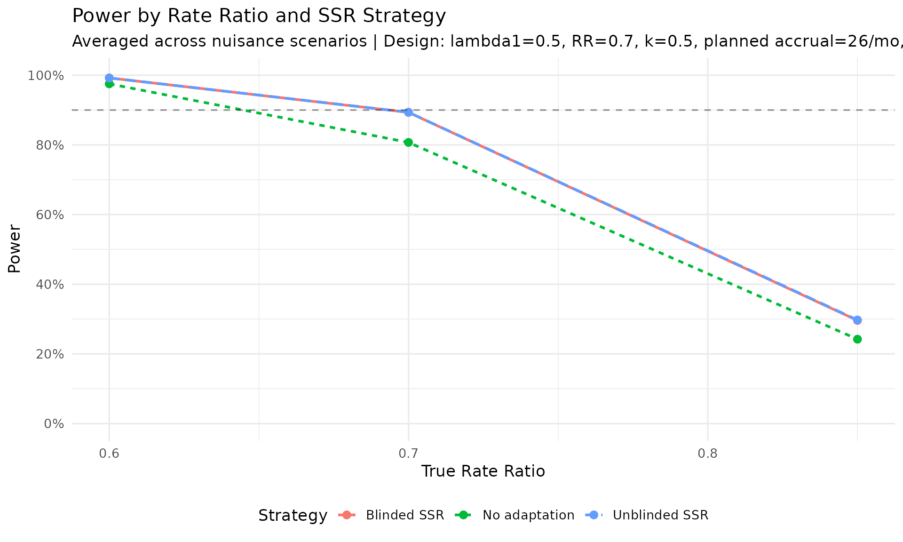
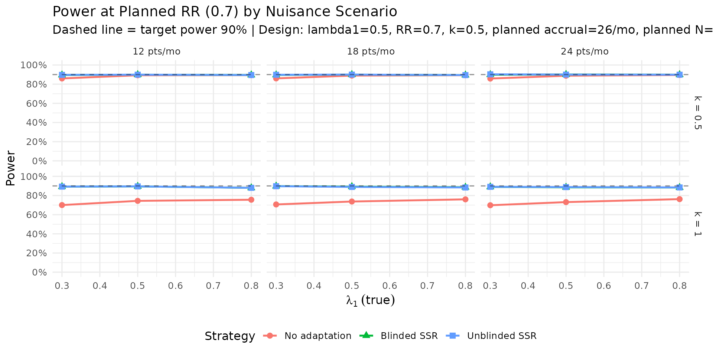
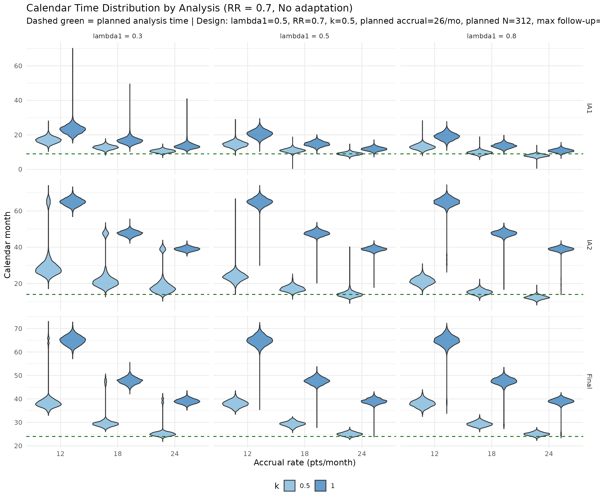
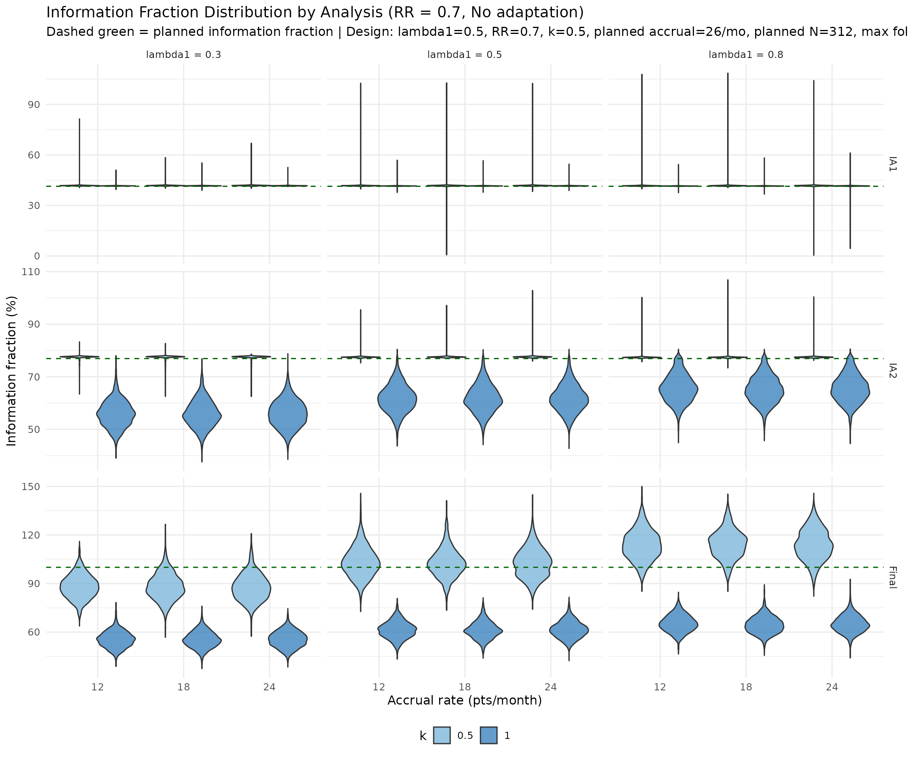

library(gsDesignNB)
library(gsDesign)
library(data.table)
library(MASS)
library(ggplot2)
library(dplyr)
library(lt)
library(future)
library(future.apply)Introduction
This vignette presents a simulation study evaluating sample size re-estimation (SSR) for group sequential trials with negative binomial recurrent event endpoints. We compare three strategies:
- No adaptation – the trial proceeds with the planned sample size.
- Blinded SSR (Friede and Schmidli 2010) – nuisance parameters are re-estimated from pooled (treatment-blinded) interim data.
- Unblinded SSR – nuisance parameters are re-estimated from treatment-specific interim data.
For hypothesis testing, the main power simulations use the
mutze_test() score statistic. This is particularly
important in SSR: adaptation can increase information when nuisance
parameters are worse than planned, and the final test must still
preserve one-sided Type I error after that adaptation. The dedicated
non-binding Type I tables therefore compare Wald and score testing under
the same one-sided \(\alpha = 0.025\)
group sequential design. The sample-size update itself remains a
nuisance-parameter recalculation that must be calibrated by simulation;
the score test controls rejection after the adaptation, rather than
making adaptation unnecessary.
Note: Much of the simulation code in this vignette was generated with the assistance of a large language model (LLM) and then reviewed and refined by the package authors.
Interim analyses are triggered when the blinded statistical information reaches the planned fraction of the target, rather than at fixed calendar times. This ensures analyses occur at comparable information levels regardless of the true nuisance parameters.
Planned trial design
lambda1_plan <- 0.5
rr_plan <- 0.7
lambda2_plan <- lambda1_plan * rr_plan
k_plan <- 0.5
power_plan <- 0.9
alpha_plan <- 0.025
analysis_test_type <- "score"
analysis_test_label <- tools::toTitleCase(analysis_test_type)
accrual_rate_plan <- 30
accrual_scenario_plan <- 18
accrual_dur_plan <- 12
max_followup <- 12
trial_dur_plan <- accrual_dur_plan + max_followup
event_gap_val <- 20 / 30.4375 # 20-day gap between events
analysis_times_plan <- c(9, 14, 24) # Calendar times under planFixed design
design_plan <- sample_size_nbinom(
lambda1 = lambda1_plan, lambda2 = lambda2_plan,
dispersion = k_plan, power = power_plan, alpha = alpha_plan,
accrual_rate = accrual_rate_plan,
accrual_duration = accrual_dur_plan,
trial_duration = trial_dur_plan,
max_followup = max_followup,
event_gap = event_gap_val,
test_type = analysis_test_type
)
design_plan_wald_check <- sample_size_nbinom(
lambda1 = lambda1_plan, lambda2 = lambda2_plan,
dispersion = k_plan, power = power_plan, alpha = alpha_plan,
accrual_rate = accrual_rate_plan,
accrual_duration = accrual_dur_plan,
trial_duration = trial_dur_plan,
max_followup = max_followup,
event_gap = event_gap_val,
test_type = "wald"
)
cat("Fixed-design sample size:", design_plan$n_total, "\n")
#> Fixed-design sample size: 258
cat("Fixed-design sample size using Wald sizing:", design_plan_wald_check$n_total, "\n")
#> Fixed-design sample size using Wald sizing: 258
cat("Primary analysis test:", analysis_test_type, "\n")
#> Primary analysis test: scoreThis production cache uses the score-test sizing option for the fixed design. The separate score-vs-Wald simulation vignette shows that, for superiority designs, traditional Wald/Zhu–Lakkis sizing paired with the score test may be a useful practical margin for power. A protocol-level SSR design should therefore compare the score-sized and Wald-sized starting designs under the planned score final test before selecting the final sample-size target. For the primary SSR design in this article, the two formulas round to the same fixed-design sample size, so the long production cache is not duplicated under an alternative starting size. A focused starting-size sensitivity appears below for a lower-event stress setting where the rounded group sequential sample sizes differ.
Group sequential design
We use a 3-analysis group sequential design with HSD efficacy spending and Cauchy futility spending calibrated so the futility bounds correspond to approximately RR = 0.9 at each analysis.
Specifically, sfl = sfCauchy with
sflpar = c(0.4, 0.75, 0.56, 0.63) gives planned lower
bounds that are close to declaring futility when the observed RR is
greater than about 0.9 at either interim. Because the design uses
non-binding futility (test.type = 4), ignoring a
lower-bound crossing does not invalidate the final efficacy decision,
which is still based on upper boundary control.
gs_plan <- design_plan |>
gsNBCalendar(
k = 3, test.type = 4, alpha = alpha_plan,
sfu = sfHSD, sfupar = -2,
sfl = sfCauchy, sflpar = c(0.4, 0.75, 0.56, 0.63),
analysis_times = analysis_times_plan
) |>
gsDesignNB::toInteger()
n_planned <- gs_plan$n_total[gs_plan$k]
target_info <- gs_plan$n.I[gs_plan$k]
planned_timing <- gs_plan$timing
gs_inflation <- n_planned / design_plan$n_total
accrual_rate_plan_eff <- n_planned / accrual_dur_plan
design_note <- paste0(
"Design: lambda1=", lambda1_plan,
", RR=", rr_plan,
", k=", k_plan,
", planned accrual=", round(accrual_rate_plan_eff, 1), "/mo",
", planned N=", n_planned,
", max follow-up=", max_followup, " mo"
)The dedicated non-binding Type I section below uses this same \(\alpha = 0.025\) group sequential design twice: once with the Wald statistic and once with the score statistic. The power simulations use the score statistic throughout, so the power results should be read as score-test power after SSR rather than as Wald-test power.
The group sequential inflation factor is 1.209, giving a planned sample size of 312 (up from the fixed-design 258) with an effective accrual rate of 26 patients per month.
gsBoundSummary(gs_plan,
deltaname = "RR", logdelta = TRUE,
Nname = "Information", timename = "Month",
digits = 4, ddigits = 2
) |>
as.data.frame() |>
lt() |>
lt_header(
title = "Planned Group Sequential Design",
subtitle = design_note
) |>
lt_note(
"Cauchy futility spending gives planned futility near observed RR > 0.9 at IA1/IA2; lower bounds are non-binding."
) |>
lt_note(
sprintf(
"Planned cumulative sample size: IA1 = %.0f, IA2 = %.0f, Final = %.0f.",
gs_plan$n_total[1], gs_plan$n_total[2], gs_plan$n_total[3]
)
)Group sequential sample size under each nuisance scenario
The figure below shows how the required group sequential sample size and monthly enrollment rate vary with the control rate \(\lambda_1\) and dispersion \(k\). Since the sample size does not depend on the enrollment pace (accrual rate only scales enrollment duration), we show two lines – one per \(k\) value – with \(\lambda_1\) on the horizontal axis. The planned design assumptions (\(\lambda_1 = 0.5\), \(k = 0.5\)) are marked with a dashed line.
lambda1_seq <- seq(0.2, 1.0, by = 0.1)
gs_n_grid <- expand.grid(
lambda1_true = lambda1_seq,
k_true = c(0.5, 1.0),
stringsAsFactors = FALSE
)
gs_n_grid$GS_N <- sapply(seq_len(nrow(gs_n_grid)), function(i) {
fixed_i <- tryCatch(
sample_size_nbinom(
lambda1 = gs_n_grid$lambda1_true[i],
lambda2 = gs_n_grid$lambda1_true[i] * rr_plan,
dispersion = gs_n_grid$k_true[i],
power = power_plan, alpha = alpha_plan,
accrual_rate = accrual_rate_plan,
accrual_duration = accrual_dur_plan,
trial_duration = trial_dur_plan,
max_followup = max_followup,
event_gap = event_gap_val,
test_type = analysis_test_type
),
error = function(e) NULL
)
if (is.null(fixed_i)) return(NA_real_)
tryCatch({
g <- gsNBCalendar(fixed_i, k = 3, test.type = 4, alpha = alpha_plan,
sfu = sfHSD, sfupar = -2,
sfl = sfCauchy, sflpar = c(0.4, 0.75, 0.56, 0.63),
analysis_times = analysis_times_plan) |>
gsDesignNB::toInteger()
g$n_total[g$k]
}, error = function(e) NA_real_)
})
gs_n_grid$Accrual_rate <- gs_n_grid$GS_N / accrual_dur_plan
gs_n_grid$k_label <- paste0("k = ", gs_n_grid$k_true)
gs_n_grid$N_label <- round(gs_n_grid$GS_N)
gs_n_grid$Rate_label <- round(gs_n_grid$Accrual_rate)
plot_n <- ggplot(gs_n_grid, aes(x = lambda1_true, y = GS_N,
color = k_label, linetype = k_label)) +
geom_line(linewidth = 1) +
geom_point(size = 2) +
geom_text(aes(label = N_label), vjust = -0.8, size = 3.2, show.legend = FALSE) +
geom_vline(xintercept = lambda1_plan, linetype = "dashed", alpha = 0.4) +
labs(x = expression(lambda[1]), y = "GS sample size (N)",
color = NULL, linetype = NULL) +
theme_minimal(base_size = 13) +
theme(legend.position = "bottom")
plot_rate <- ggplot(gs_n_grid, aes(x = lambda1_true, y = Accrual_rate,
color = k_label, linetype = k_label)) +
geom_line(linewidth = 1) +
geom_point(size = 2) +
geom_text(aes(label = Rate_label), vjust = -0.8, size = 3.2, show.legend = FALSE) +
geom_vline(xintercept = lambda1_plan, linetype = "dashed", alpha = 0.4) +
labs(x = expression(lambda[1]), y = "Enrollment rate (pts/mo)",
color = NULL, linetype = NULL) +
theme_minimal(base_size = 13) +
theme(legend.position = "bottom")
gridExtra::grid.arrange(plot_n, plot_rate, ncol = 2,
top = grid::textGrob(
"GS Sample Size and Enrollment Rate by Control Rate and Dispersion",
gp = grid::gpar(fontsize = 14, fontface = "bold")
)
)
Across the range of \(\lambda_1\) and \(k\) values considered, the required group sequential sample size ranges from 272 to 644. Higher dispersion (\(k = 1.0\)) consistently requires more subjects than \(k = 0.5\), while higher control rates reduce the required N because each subject contributes more information. This wide range highlights why sample size re-estimation can be valuable when nuisance parameters are uncertain.
Expected information fraction at planned time of each interim
This table shows the expected information fraction at each planned interim calendar time under each nuisance scenario. Under the approximate design assumptions (bold green row), the information fractions match the GS design reasonably well (41.4%, 76.9%).
nuisance_grid <- expand.grid(
lambda1_true = c(0.3, 0.5, 0.8),
k_true = c(0.5, 1.0),
accrual_true = c(12, 18, 24),
stringsAsFactors = FALSE
)
# Accrual scenarios use effective monthly enrollment rates directly.
for (a in 1:2) {
col_name <- paste0("IF_analysis_", a)
nuisance_grid[[col_name]] <- sapply(seq_len(nrow(nuisance_grid)), function(i) {
accrual_eff <- nuisance_grid$accrual_true[i]
info_at_t <- compute_info_at_time(
analysis_time = analysis_times_plan[a],
accrual_rate = accrual_eff,
accrual_duration = accrual_dur_plan,
lambda1 = nuisance_grid$lambda1_true[i],
lambda2 = nuisance_grid$lambda1_true[i] * rr_plan,
dispersion = nuisance_grid$k_true[i],
max_followup = max_followup,
event_gap = event_gap_val
)
round(100 * info_at_t / target_info, 1)
})
}
nuisance_grid |>
lt() |>
lt_header(
title = "Expected Information Fraction (%) at Planned Time of Each Interim",
subtitle = design_note
) |>
lt_label(
lambda1_true = "lambda1",
k_true = "k",
accrual_true = "Accrual (pts/mo)",
IF_analysis_1 = paste0("IA 1 (mo ", analysis_times_plan[1], ")"),
IF_analysis_2 = paste0("IA 2 (mo ", analysis_times_plan[2], ")")
) |>
lt_note(
paste(
"Computed via compute_info_at_time() divided by planned final information.",
"Accrual values (12/18/24) are effective enrollment rates used directly.",
"Bold green = design assumptions.",
"With information-based timing, interims occur when blinded info reaches",
"the target fraction, so the calendar time varies by scenario."
)
)Scenario grid
scenarios <- expand.grid(
lambda1_true = c(0.3, 0.5, 0.8),
k_true = c(0.5, 1.0),
accrual_true = c(12, 18, 24),
rr_true = c(0.6, 0.7, 0.85, 1.0, 1.1),
stringsAsFactors = FALSE
)
n_sims_initial <- 50
n_sims_production_power <- 3600L
n_sims_production_type1 <- 20000L
n_sims_production_rr_gt1 <- 1000L
use_production <- identical(Sys.getenv("GSDESIGNNB_PRODUCTION_SSR"), "true")
# Production rep counts for Type I (non-binding) tables only, without re-running the full power grid:
use_production_type1 <- use_production ||
identical(Sys.getenv("GSDESIGNNB_PRODUCTION_TYPE1"), "true")
scenarios$n_sims <- if (use_production) {
as.integer(ifelse(
scenarios$rr_true == 1,
n_sims_production_type1,
ifelse(scenarios$rr_true > 1, n_sims_production_rr_gt1, n_sims_production_power)
))
} else {
rep(as.integer(n_sims_initial), length.out = nrow(scenarios))
}
scenarios$accrual_eff <- scenarios$accrual_true
n_max <- 2 * n_planned
min_if_futility <- 0.3
target_if <- planned_timing # Target IF for each analysis
# IA2 adaptation gate (less strict than prior 80% / 2 months setting)
max_enrollment_frac_for_ia2 <- 1.00
min_months_to_close_for_adapt <- 2
analysis_lag_months <- 2
# Optional precomputed summaries for fast vignette builds. The full
# trial-level simulation cache is useful for development, but the CRAN build
# uses compact summaries so the source package stays small.
summary_basename <- paste0("ssr_sim_vignette_summary_", analysis_test_type, ".rds")
raw_precomputed_basename <- paste0("ssr_sim_vignette_outputs_", analysis_test_type, ".rds")
project_root <- if (file.exists("DESCRIPTION")) "." else
if (file.exists("../DESCRIPTION")) ".." else "."
summary_source_path <- file.path(
project_root, "inst", "extdata", summary_basename
)
raw_precomputed_source_path <- file.path(
project_root, "inst", "extdata", raw_precomputed_basename
)
precomputed_file <- system.file("extdata", summary_basename, package = "gsDesignNB")
precomputed_kind <- "summary"
if (precomputed_file == "" && file.exists(summary_source_path)) {
precomputed_file <- summary_source_path
}
if (precomputed_file == "") {
precomputed_file <- system.file("extdata", raw_precomputed_basename, package = "gsDesignNB")
precomputed_kind <- "raw"
}
if (precomputed_file == "" && file.exists(raw_precomputed_source_path)) {
precomputed_file <- raw_precomputed_source_path
precomputed_kind <- "raw"
}
force_rerun <- identical(Sys.getenv("GSDESIGNNB_FORCE_SSR_SIM"), "true")
use_precomputed <- (!use_production) && !force_rerun && nzchar(precomputed_file)
save_precomputed <- identical(Sys.getenv("GSDESIGNNB_SAVE_SSR_OUTPUTS"), "true")
save_precomputed_path <- summary_source_path
# Re-run Type I (non-binding) sims even if RDS cache exists (see inst/extdata/ssr_type1_null_*.rds)
force_type1_sim <- identical(Sys.getenv("GSDESIGNNB_FORCE_TYPE1_SIM"), "true")
type1_cache_dir <- dirname(save_precomputed_path)
cat("Scenarios:", nrow(scenarios), "| Fresh-run replicates requested:", sum(scenarios$n_sims), "\n")
#> Scenarios: 90 | Fresh-run replicates requested: 4500
if (use_precomputed) {
cat("Rendered results use the replicate counts stored in the precomputed summary cache.\n")
}
#> Rendered results use the replicate counts stored in the precomputed summary cache.
cat("Accrual rates used in simulation:", paste(round(sort(unique(scenarios$accrual_true)), 1), collapse = ", "),
"/month\n")
#> Accrual rates used in simulation: 12, 18, 24 /month
cat(
"IA2 SSR gate: adaptation uses cutoff at min(IA2 time, predicted close - ",
min_months_to_close_for_adapt,
" months); enrollment cap <= ",
100 * max_enrollment_frac_for_ia2,
"%.\n",
sep = ""
)
#> IA2 SSR gate: adaptation uses cutoff at min(IA2 time, predicted close - 2 months); enrollment cap <= 100%.
cat("Futility-stop sample size counts enrollment through +",
analysis_lag_months, " months after stop.\n", sep = "")
#> Futility-stop sample size counts enrollment through +2 months after stop.
cat("Production plan:", n_sims_production_power,
"reps per scenario for RR < 1 (power);",
n_sims_production_type1, "reps per scenario for RR = 1.0 (Type I);",
n_sims_production_rr_gt1, "reps per scenario for RR > 1.\n")
#> Production plan: 3600 reps per scenario for RR < 1 (power); 20000 reps per scenario for RR = 1.0 (Type I); 1000 reps per scenario for RR > 1.
cat("separate RR = 1 non-binding futility check uses", n_sims_production_type1,
"reps per k and test statistic.\n")
#> separate RR = 1 non-binding futility check uses 20000 reps per k and test statistic.
if (use_precomputed) cat("Using precomputed", precomputed_kind, "cache:", precomputed_file, "\n")
#> Using precomputed summary cache: /home/runner/work/_temp/Library/gsDesignNB/extdata/ssr_sim_vignette_summary_score.rds
cat(
"Type I (RR=1, non-binding) per-test cache: inst/extdata/ssr_type1_null_alpha025_wald.rds,",
"ssr_type1_null_alpha025_score.rds; set GSDESIGNNB_FORCE_TYPE1_SIM=true to rebuild.\n"
)
#> Type I (RR=1, non-binding) per-test cache: inst/extdata/ssr_type1_null_alpha025_wald.rds, ssr_type1_null_alpha025_score.rds; set GSDESIGNNB_FORCE_TYPE1_SIM=true to rebuild.
cat(
"Production Type I reps only (keep precomputed power grid):",
"GSDESIGNNB_PRODUCTION_TYPE1=true\n"
)
#> Production Type I reps only (keep precomputed power grid): GSDESIGNNB_PRODUCTION_TYPE1=trueSimulation engine
The reusable adaptive-trial logic now lives in
sim_ssr_nbinom(). This vignette keeps the scenario
grid, caching, and
visualization layers, but delegates the actual SSR
simulation engine to the package.
Interim analyses are information-based and use dynamic spending:
- IA1 (~40% IF): efficacy/futility only; no SSR adaptation.
- IA2 (target ~76% IF): efficacy/futility evaluated using observed IF and spending.
- SSR at IA2 only: nuisance estimates for adaptation use an IA2 adaptation cutoff time at \(\min(\text{IA2 time},\; \text{predicted enrollment close} - 2 \text{ months})\), enforcing at least 2 months of operational lead-time. The enrollment-fraction cap is set in the scenario setup.
At each analysis, bounds are recalculated from observed information
and spending time. The blinded NB information estimate from
calculate_blinded_info() is used to determine interim
timing. If this estimate is unavailable or non-positive, timing falls
back to unblinded information from mutze_test() (tracked as
fallback counts in the results table).
make_enroll_rate <- function(accrual_eff) {
data.frame(rate = accrual_eff, duration = n_max / accrual_eff)
}
make_fail_rate <- function(lambda1_true, rr_true, k_true) {
data.frame(
treatment = c("Control", "Experimental"),
rate = c(lambda1_true, lambda1_true * rr_true),
dispersion = k_true
)
}
dropout_rate_sim <- data.frame(
treatment = c("Control", "Experimental"),
rate = c(0, 0),
duration = c(100, 100)
)
run_scenario <- function(sc_idx) {
sc <- scenarios[sc_idx, ]
message(sprintf(
"Starting scenario %d / %d: RR=%.2f, lambda1=%.2f, k=%.2f, accrual=%.1f",
sc_idx, nrow(scenarios), sc$rr_true, sc$lambda1_true, sc$k_true, sc$accrual_true
))
sim_res <- sim_ssr_nbinom(
n_sims = sc$n_sims,
enroll_rate = make_enroll_rate(sc$accrual_eff),
fail_rate = make_fail_rate(sc$lambda1_true, sc$rr_true, sc$k_true),
dropout_rate = dropout_rate_sim,
max_followup = max_followup,
design = gs_plan,
n_max = n_max,
min_if_futility = min_if_futility,
max_enrollment_frac_for_adapt = max_enrollment_frac_for_ia2,
min_months_to_close_for_adapt = min_months_to_close_for_adapt,
analysis_lag_months = analysis_lag_months,
event_gap = event_gap_val,
ignore_futility = FALSE,
test_type = analysis_test_type,
metadata = list(
lambda1_true = sc$lambda1_true,
k_true = sc$k_true,
accrual_true = sc$accrual_true,
accrual_eff = sc$accrual_eff,
analysis_test = analysis_test_type,
rr_true = sc$rr_true
),
seed = 1000 + sc_idx
)
sim_res$trial_results
}
run_null_type1_sims <- function(gs_plan_x, alpha_plan_x, null_n, test_type_x) {
null_all <- vector("list", length(null_k_scenarios))
for (i in seq_along(null_k_scenarios)) {
k_null <- null_k_scenarios[i]
sim_res <- sim_ssr_nbinom(
n_sims = null_n,
enroll_rate = make_enroll_rate(accrual_scenario_plan),
fail_rate = make_fail_rate(lambda1_plan, 1.0, k_null),
dropout_rate = dropout_rate_sim,
max_followup = max_followup,
design = gs_plan_x,
n_max = n_max,
min_if_futility = min_if_futility,
max_enrollment_frac_for_adapt = max_enrollment_frac_for_ia2,
min_months_to_close_for_adapt = min_months_to_close_for_adapt,
analysis_lag_months = analysis_lag_months,
event_gap = event_gap_val,
ignore_futility = TRUE,
test_type = test_type_x,
metadata = list(k_true = k_null, analysis_test = test_type_x),
seed = 5000 + i
)
null_all[[i]] <- sim_res$trial_results
}
null_all <- Filter(Negate(is.null), null_all)
if (length(null_all) == 0) {
return(data.table(
k_true = numeric(0), analysis_test = character(0), strategy = character(0),
n_sims = integer(0), type1_error = numeric(0),
cross_ia1 = numeric(0), cross_ia2 = numeric(0), cross_final = numeric(0),
mean_n = numeric(0), adapted_rate = numeric(0)
))
}
null_dt <- rbindlist(null_all)
sm <- summarize_ssr_sim(null_dt, by = c("k_true", "strategy"))$trial_summary
sm <- as.data.frame(sm)
sm$type1_error <- sm$rejection_rate
sm$adapted_rate <- sm$pct_adapted / 100
sm[, c(
"k_true", "strategy", "n_sims", "type1_error",
"cross_ia1", "cross_ia2", "cross_final", "mean_n", "adapted_rate"
)]
sm$analysis_test <- test_type_x
sm[, c(
"k_true", "analysis_test", "strategy", "n_sims", "type1_error",
"cross_ia1", "cross_ia2", "cross_final", "mean_n", "adapted_rate"
)]
}Running simulations
precomputed_outputs <- NULL
using_summary_cache <- FALSE
rows_for_runtime <- NA_integer_
if (use_precomputed) {
precomputed_outputs <- readRDS(precomputed_file)
using_summary_cache <- isTRUE(!is.null(precomputed_outputs$summary_dt))
sim_runtime_seconds <- precomputed_outputs$sim_runtime_seconds
workers <- if (!is.null(precomputed_outputs$workers)) {
as.integer(precomputed_outputs$workers)
} else {
max(1L, future::availableCores() - 1L)
}
if (using_summary_cache) {
all_results <- NULL
rows_for_runtime <- precomputed_outputs$rows
sim_mode <- "Loaded precomputed summaries"
} else {
all_results <- as.data.frame(precomputed_outputs$plot_data)
rows_for_runtime <- nrow(all_results)
sim_mode <- "Loaded precomputed trial-level outputs"
}
} else {
sim_start <- Sys.time()
workers <- max(1L, future::availableCores() - 1L)
old_plan <- future::plan()
future::plan(future::multisession, workers = workers)
all_results <- lapply(seq_len(nrow(scenarios)), run_scenario)
future::plan(old_plan)
all_results <- Filter(Negate(is.null), all_results)
all_results <- do.call(rbind, all_results)
sim_runtime_seconds <- as.numeric(difftime(Sys.time(), sim_start, units = "secs"))
rows_for_runtime <- nrow(all_results)
sim_mode <- "Fresh simulation"
}
# Backward-compatible defaults for precomputed files from older vignette versions
if (!using_summary_cache) {
required_cols <- c(
"ia2_adapt_cut_time",
"ia2_enroll_frac", "ia2_months_to_close_pred",
"ia2_adapt_allowed", "ia2_adapt_applied"
)
missing_cols <- setdiff(required_cols, names(all_results))
if (length(missing_cols) > 0) {
for (nm in missing_cols) all_results[[nm]] <- NA
}
}
cat("Simulation mode:", sim_mode, "\n")
#> Simulation mode: Loaded precomputed summaries
cat("Workers:", workers, "\n")
#> Workers: 11
cat("Trial-level rows represented:", rows_for_runtime, "\n")
#> Trial-level rows represented: 1717200
if (!is.null(sim_runtime_seconds) && is.finite(sim_runtime_seconds)) {
cat(sprintf("Simulation wall time: %.2f minutes (%.1f seconds)\n",
sim_runtime_seconds / 60, sim_runtime_seconds))
}
#> Simulation wall time: 281.73 minutes (16904.1 seconds)
# RR = 1.0 non-binding futility check (Type I), comparing Wald and score tests
# under the same nominal alpha = 0.025 design. Power simulations use the score
# test selected by analysis_test_type.
# Results cache: inst/extdata/ssr_type1_null_alpha025_wald.rds and
# ssr_type1_null_alpha025_score.rds
# Re-run after changing sim logic or rep count: Sys.setenv(GSDESIGNNB_FORCE_TYPE1_SIM = "true")
null_nonbinding_n <- if (use_production_type1) n_sims_production_type1 else n_sims_initial
null_k_scenarios <- c(k_plan, 1.0)
type1_tests <- list(
list(
key = "alpha025_wald",
label = "Wald",
test_type = "wald",
gs_plan = gs_plan,
alpha_plan = alpha_plan
),
list(
key = "alpha025_score",
label = "Score",
test_type = "score",
gs_plan = gs_plan,
alpha_plan = alpha_plan
)
)
null_nonbinding_by_test <- list()
null_nonbinding_runtime_by_test <- list()
null_nonbinding_mode_by_test <- list()
bundle_type1_ok <- isTRUE(use_precomputed) &&
is.list(precomputed_outputs$null_nonbinding_by_test) &&
all(c("Wald", "Score") %in% names(precomputed_outputs$null_nonbinding_by_test))
if (bundle_type1_ok) {
null_nonbinding_by_test[["Wald"]] <-
as.data.table(precomputed_outputs$null_nonbinding_by_test[["Wald"]])
null_nonbinding_by_test[["Score"]] <-
as.data.table(precomputed_outputs$null_nonbinding_by_test[["Score"]])
br <- precomputed_outputs$null_nonbinding_runtime_by_test
if (!is.null(br)) {
null_nonbinding_runtime_by_test <- as.list(br)
} else {
null_nonbinding_runtime_by_test <- list(
"Wald" = precomputed_outputs$null_nonbinding_runtime_seconds,
"Score" = NA_real_
)
}
null_nonbinding_mode_by_test <- list("Wald" = "Precomputed bundle", "Score" = "Precomputed bundle")
} else {
dir.create(type1_cache_dir, recursive = TRUE, showWarnings = FALSE)
for (td in type1_tests) {
cache_path <- file.path(type1_cache_dir, paste0("ssr_type1_null_", td$key, ".rds"))
loaded <- FALSE
if (!force_type1_sim && file.exists(cache_path)) {
cr <- tryCatch(readRDS(cache_path), error = function(e) NULL)
same_n <- is.list(cr) && isTRUE(
as.integer(cr$null_nonbinding_n) == as.integer(null_nonbinding_n)
)
if (same_n) {
null_nonbinding_by_test[[td$label]] <- as.data.table(cr$summary)
null_nonbinding_runtime_by_test[[td$label]] <- cr$runtime_seconds
null_nonbinding_mode_by_test[[td$label]] <- "Cached RDS"
loaded <- TRUE
}
}
if (!loaded) {
cat("Running Type I (non-binding) sims:", td$label, "test, alpha =", td$alpha_plan, "\n")
t0 <- Sys.time()
sm <- run_null_type1_sims(td$gs_plan, td$alpha_plan, null_nonbinding_n, td$test_type)
rt <- as.numeric(difftime(Sys.time(), t0, units = "secs"))
null_nonbinding_by_test[[td$label]] <- sm
null_nonbinding_runtime_by_test[[td$label]] <- rt
null_nonbinding_mode_by_test[[td$label]] <- "Fresh simulation"
saveRDS(
list(
summary = as.data.frame(sm),
runtime_seconds = rt,
null_nonbinding_n = null_nonbinding_n,
alpha_design = td$alpha_plan,
test_type = td$test_type,
generated_at = as.character(Sys.time())
),
cache_path
)
cat(" Saved:", cache_path, "\n")
}
}
}
null_nonbinding_summary <- null_nonbinding_by_test[[analysis_test_label]]
null_nonbinding_runtime_seconds <- null_nonbinding_runtime_by_test[[analysis_test_label]]
null_nonbinding_mode <- paste0(
"Wald: ", null_nonbinding_mode_by_test[["Wald"]],
" | Score: ", null_nonbinding_mode_by_test[["Score"]]
)
cat("RR=1 non-binding Type I modes:", null_nonbinding_mode, "\n")
#> RR=1 non-binding Type I modes: Wald: Precomputed bundle | Score: Precomputed bundle
cat("RR=1 non-binding replications per k:", null_nonbinding_n, "\n")
#> RR=1 non-binding replications per k: 50
cat("k scenarios:", paste(null_k_scenarios, collapse = ", "), "\n")
#> k scenarios: 0.5, 1Results
if (using_summary_cache) {
dt <- NULL
summary_dt <- as.data.table(precomputed_outputs$summary_dt)
power_avg <- as.data.table(precomputed_outputs$power_avg)
stage_long <- as.data.table(precomputed_outputs$stage_long)
adapted_n_summary <- as.data.table(precomputed_outputs$adapted_n_summary)
en_summary <- as.data.table(precomputed_outputs$en_summary)
time_summary <- as.data.table(precomputed_outputs$time_summary)
if_summary <- as.data.table(precomputed_outputs$if_summary)
} else {
dt <- as.data.table(all_results)
summary_dt <- summarize_ssr_sim(
dt,
by = c("lambda1_true", "k_true", "accrual_true", "rr_true", "strategy")
)$trial_summary |>
as.data.table()
}
if (is.null(dt)) {
stop("Saving precomputed summaries requires a fresh or raw trial-level run.")
}
power_avg <- dt[rr_true < 1.0, .(
power = mean(reject, na.rm = TRUE),
mean_final_if = mean(if_final, na.rm = TRUE),
mean_final_month = mean(final_time, na.rm = TRUE)
), by = .(rr_true, strategy)]
stage_dt <- dt[rr_true <= 1.0, .(
`Cross IA1` = mean(reject_stage == "IA1", na.rm = TRUE),
`Cross IA2` = mean(reject_stage == "IA2", na.rm = TRUE),
`Cross Final` = mean(reject_stage == "Final", na.rm = TRUE),
`No cross Final` = mean(reject_stage == "No reject" & !futility, na.rm = TRUE),
`Futility IA2` = mean(futility_stage == "IA2", na.rm = TRUE),
`Futility IA1` = mean(futility_stage == "IA1", na.rm = TRUE)
), by = .(rr_true, lambda1_true, k_true, accrual_true, strategy)]
stage_long <- data.table::melt(
stage_dt,
id.vars = c("rr_true", "lambda1_true", "k_true", "accrual_true", "strategy"),
variable.name = "outcome",
value.name = "prob"
)
summary_quantiles <- function(x) {
qs <- stats::quantile(
x,
probs = c(0.05, 0.25, 0.5, 0.75, 0.95),
na.rm = TRUE,
names = FALSE
)
list(
mean = mean(x, na.rm = TRUE),
sd = stats::sd(x, na.rm = TRUE),
q05 = qs[1],
q25 = qs[2],
q50 = qs[3],
q75 = qs[4],
q95 = qs[5]
)
}
adapted_n_summary <- dt[
rr_true <= 1.0 & strategy %in% c("Blinded SSR", "Unblinded SSR"),
as.list(summary_quantiles(n_adapted)),
by = .(rr_true, lambda1_true, k_true, accrual_true, strategy)
]
en_summary <- dt[rr_true <= 1.0, .(
mean_n = mean(n_adapted, na.rm = TRUE),
sd_n = stats::sd(n_adapted, na.rm = TRUE)
), by = .(rr_true, lambda1_true, k_true, accrual_true, strategy)]
time_long_save <- data.table::melt(
dt[strategy == "No adaptation" & rr_true == rr_plan, .(
lambda1_true, k_true, accrual_true,
IA1 = ia1_time, IA2 = ia2_time, Final = final_time
)],
id.vars = c("lambda1_true", "k_true", "accrual_true"),
variable.name = "analysis",
value.name = "calendar_time"
)
time_summary <- time_long_save[
,
as.list(summary_quantiles(calendar_time)),
by = .(lambda1_true, k_true, accrual_true, analysis)
]
if_long_save <- data.table::melt(
dt[strategy == "No adaptation" & rr_true == rr_plan, .(
lambda1_true, k_true, accrual_true,
IA1 = 100 * if_ia1, IA2 = 100 * if_ia2, Final = 100 * if_final
)],
id.vars = c("lambda1_true", "k_true", "accrual_true"),
variable.name = "analysis",
value.name = "info_fraction"
)
if_summary <- if_long_save[
,
as.list(summary_quantiles(info_fraction)),
by = .(lambda1_true, k_true, accrual_true, analysis)
]
dir.create(dirname(save_precomputed_path), recursive = TRUE, showWarnings = FALSE)
saveRDS(
list(
summary_dt = as.data.frame(summary_dt),
power_avg = as.data.frame(power_avg),
stage_long = as.data.frame(stage_long),
adapted_n_summary = as.data.frame(adapted_n_summary),
en_summary = as.data.frame(en_summary),
time_summary = as.data.frame(time_summary),
if_summary = as.data.frame(if_summary),
sim_runtime_seconds = sim_runtime_seconds,
workers = workers,
rows = nrow(dt),
null_nonbinding_summary = as.data.frame(null_nonbinding_summary),
null_nonbinding_by_test = lapply(null_nonbinding_by_test, as.data.frame),
null_nonbinding_n = null_nonbinding_n,
null_nonbinding_runtime_seconds = null_nonbinding_runtime_seconds,
null_nonbinding_runtime_by_test = null_nonbinding_runtime_by_test,
generated_at = as.character(Sys.time()),
settings = list(
analysis_test_type = analysis_test_type,
n_sims_initial = n_sims_initial,
n_sims_production_power = n_sims_production_power,
n_sims_production_type1 = n_sims_production_type1,
n_sims_production_rr_gt1 = n_sims_production_rr_gt1,
use_production = use_production,
use_production_type1 = use_production_type1,
design_note = design_note
)
),
save_precomputed_path
)
cat("Saved precomputed vignette outputs to:", save_precomputed_path, "\n")
scenario_rep_counts <- unique(summary_dt[, .(
lambda1_true, k_true, accrual_true, rr_true, n_sims
)])
runtime_df <- data.frame(
Metric = c("Simulation mode", "Workers", "Scenarios", "Replicates", "Rows", "Wall time (minutes)"),
Value = c(
sim_mode,
as.character(workers),
nrow(scenario_rep_counts),
sum(scenario_rep_counts$n_sims),
rows_for_runtime,
if (!is.null(sim_runtime_seconds) && is.finite(sim_runtime_seconds))
sprintf("%.2f", sim_runtime_seconds / 60) else "NA"
)
)
runtime_df |>
lt() |>
lt_header(
title = "Simulation Runtime",
subtitle = "Use precomputed summaries to avoid rerunning on pkgdown/CI/CRAN builds"
)
# Same nominal one-sided alpha = 0.025 design; compare Wald and score tests.
for (test_label in c("Wald", "Score")) {
cat("\n\n### Type I error table: ", test_label, " test, alpha = 0.025\n\n", sep = "")
null_df <- as.data.frame(null_nonbinding_by_test[[test_label]])
if (!"k_true" %in% names(null_df)) null_df$k_true <- NA_real_
rt_min <- null_nonbinding_runtime_by_test[[test_label]]
rt_str <- if (is.finite(rt_min)) paste0(round(rt_min / 60, 2), " min") else "NA"
null_display <- null_df |>
dplyr::transmute(
k = k_true,
Strategy = strategy,
`Type I error` = round(type1_error, 4),
`IA1` = round(cross_ia1, 4),
`IA2` = round(cross_ia2, 4),
`Final` = round(cross_final, 4),
`Mean N` = round(mean_n, 1),
`SSR applied (%)` = round(100 * adapted_rate, 1)
)
tab <- null_display |>
lt() |>
lt_header(
title = paste0("Type I Error Under RR = 1.0: ", test_label, " Test"),
subtitle = paste0(
"Nominal one-sided alpha: 0.025 | ",
"Replications per k: ", null_nonbinding_n,
" | ", null_nonbinding_mode_by_test[[test_label]],
" | Runtime: ", rt_str
)
) |>
lt_spanner(label = "Efficacy crossing at", columns = c("IA1", "IA2", "Final")) |>
lt_note(
paste(
"Futility stopping is ignored (non-binding) so all trials continue to",
"the final analysis unless stopped for efficacy.",
"'SSR applied' is the percentage of trials where the adapted N exceeded",
"the planned N (planning k =", k_plan, ").",
"Under the null, SSR may still increase N because",
"nuisance parameter estimates can differ from planning values.",
"Both tables use the same group-sequential design built at nominal alpha = 0.025;",
"the only intended difference is the final/interim test statistic.",
"Power results elsewhere use the score test."
)
)
print(tab)
}Starting sample-size sensitivity
The main SSR production cache is based on the score-sized fixed design, but in the primary planning example the Wald and score formulas round to the same starting sample size. To check whether the fixed-design power margin from Wald sizing carries through an adaptive SSR workflow, we add a targeted sensitivity in a low-event stress setting (\(\lambda_1 = 0.15\), \(k = 0.5\), RR = 0.7, no event gap). In that setting the Wald-sized group sequential design enrolls 472 participants at the final analysis, compared with 464 for the score-sized design. Both starting-size rules below still use the score test for interim and final analyses; only the starting design is changed.
sizing_sens_source_path <- file.path(
project_root, "inst", "extdata", "ssr_sizing_sensitivity.rds"
)
sizing_sens_file <- system.file(
"extdata", "ssr_sizing_sensitivity.rds", package = "gsDesignNB"
)
if (sizing_sens_file == "" && file.exists(sizing_sens_source_path)) {
sizing_sens_file <- sizing_sens_source_path
}
if (sizing_sens_file == "") {
cat(
"The supplemental SSR sizing-sensitivity cache is not available. ",
"Run `Rscript data-raw/generate_ssr_sizing_sensitivity.R` to regenerate it.\n"
)
} else {
sizing_sens <- readRDS(sizing_sens_file)
sizing_sens_dt <- as.data.table(sizing_sens$summary)
sizing_sens_dt[, Metric := fifelse(
rr_true == 1,
"Type I error (RR = 1.0; non-binding futility)",
paste0("Power (RR = ", rr_true, ")")
)]
sizing_sens_dt[, `Starting design` := tools::toTitleCase(starting_sizing)]
sizing_sens_dt[, `Estimate` := rejection_rate]
sizing_sens_dt[, `SSR applied (%)` := pct_adapted]
sizing_sens_display <- sizing_sens_dt[
strategy %in% c("No adaptation", "Blinded SSR", "Unblinded SSR"),
.(
Metric,
`Starting design`,
Strategy = strategy,
`Fixed N` = fixed_n,
`GS N` = gs_n,
Estimate = round(Estimate, 4),
MCSE = round(mcse, 4),
`Mean N` = round(mean_n, 1),
`SSR applied (%)` = round(`SSR applied (%)`, 1)
)
]
setorder(sizing_sens_display, Metric, `Starting design`, Strategy)
sizing_sens_display |>
lt() |>
lt_group(~ Metric, sort = FALSE) |>
lt_header(
title = "Supplemental SSR Starting-Size Sensitivity",
subtitle = paste(
"Score final test; Wald-sized GS N =",
max(sizing_sens_display$`GS N`),
"vs score-sized GS N =",
min(sizing_sens_display$`GS N`)
)
) |>
lt_note(
paste(
"This targeted sensitivity uses a lower-event stress setting and is",
"intended to check the direction of the starting-size recommendation,",
"not to replace the full SSR production grid."
)
)
}In this stress setting, the score-test Type I estimates remain close to nominal for both starting-size rules: 0.0252–0.0258 with the Wald-sized start and 0.0258–0.0266 with the score-sized start, with MCSE about 0.0022. At RR = 0.7, the power estimates are also similar across starting-size rules and within Monte Carlo uncertainty. The Wald-sized start increases the group sequential sample size from 464 to 472, but it does not produce a clear additional power advantage in this SSR setting. This supports the practical recommendation to simulate the specific SSR rule rather than assuming that a fixed-design sizing margin will automatically translate into adaptive-design power.
Power by rate ratio and SSR strategy
if (!exists("power_avg")) {
power_avg <- dt[rr_true < 1.0, .(
power = mean(reject, na.rm = TRUE),
mean_final_if = mean(if_final, na.rm = TRUE),
mean_final_month = mean(final_time, na.rm = TRUE)
), by = .(rr_true, strategy)]
}
power_avg <- as.data.table(power_avg)
ggplot(power_avg, aes(x = rr_true, y = power,
color = strategy, linetype = strategy)) +
geom_line(linewidth = 1) +
geom_point(size = 2.5) +
geom_hline(yintercept = power_plan, linetype = "dashed", alpha = 0.4) +
scale_y_continuous(
limits = c(0, 1),
breaks = seq(0, 1, 0.2),
labels = scales::percent
) +
scale_x_continuous(breaks = seq(0.5, 0.9, 0.1)) +
labs(
title = "Power by Rate Ratio and SSR Strategy",
subtitle = paste("Averaged across nuisance scenarios |", design_note),
x = "True Rate Ratio", y = "Power",
color = "Strategy", linetype = "Strategy"
) +
theme_minimal(base_size = 13) +
theme(legend.position = "bottom")
power_rr_plan <- summary_dt[
rr_true == rr_plan &
strategy %in% c("No adaptation", "Blinded SSR", "Unblinded SSR")
]
power_rr_plan[, strategy := factor(strategy,
levels = c("No adaptation", "Blinded SSR", "Unblinded SSR"))]
power_rr_plan[, k_label := paste0("k = ", k_true)]
power_rr_plan[, accrual_label := paste0(accrual_true, " pts/mo")]
ggplot(power_rr_plan,
aes(x = lambda1_true, y = rejection_rate,
color = strategy, shape = strategy)) +
geom_line(linewidth = 0.9) +
geom_point(size = 2.5) +
geom_hline(yintercept = power_plan, linetype = "dashed", alpha = 0.4) +
facet_grid(k_label ~ accrual_label) +
scale_y_continuous(limits = c(0, 1), breaks = seq(0, 1, 0.2),
labels = scales::percent) +
labs(
title = sprintf("Power at Planned RR (%.1f) by Nuisance Scenario", rr_plan),
subtitle = paste("Dashed line = target power", scales::percent(power_plan),
"|", design_note),
x = expression(lambda[1]~(true)), y = "Power",
color = "Strategy", shape = "Strategy"
) +
theme_minimal(base_size = 12) +
theme(legend.position = "bottom")
Calendar and information at each analysis
The plots below summarize simulated distributions for \(k = 0.5\) and \(k = 1.0\), with vertical panels for IA1, IA2, and Final analysis. Points show medians, thick intervals show interquartile ranges, and thin intervals show 5th–95th percentile ranges. Panels use free y-scales.
if (!exists("time_summary")) {
time_long <- dt[strategy == "No adaptation" & rr_true == rr_plan, .(
lambda1_true, k_true, accrual_true,
IA1 = ia1_time, IA2 = ia2_time, Final = final_time
)]
time_long <- data.table::melt(
time_long,
id.vars = c("lambda1_true", "k_true", "accrual_true"),
variable.name = "analysis",
value.name = "calendar_time"
)
time_summary <- time_long[
,
{
qs <- stats::quantile(
calendar_time,
probs = c(0.05, 0.25, 0.5, 0.75, 0.95),
na.rm = TRUE,
names = FALSE
)
.(q05 = qs[1], q25 = qs[2], q50 = qs[3], q75 = qs[4], q95 = qs[5])
},
by = .(lambda1_true, k_true, accrual_true, analysis)
]
}
time_summary <- as.data.table(time_summary)
time_summary[, analysis := factor(analysis, levels = c("IA1", "IA2", "Final"))]
time_summary[, lambda1_label := paste0("lambda1 = ", lambda1_true)]
time_summary[, k_label := paste0("k = ", k_true)]
planned_time_df <- data.frame(
analysis = factor(c("IA1", "IA2", "Final"), levels = c("IA1", "IA2", "Final")),
planned_time = c(analysis_times_plan[1], analysis_times_plan[2], analysis_times_plan[3])
)
ggplot(time_summary,
aes(x = factor(accrual_true), y = q50, color = factor(k_true))) +
geom_linerange(
aes(ymin = q05, ymax = q95, group = factor(k_true)),
position = position_dodge(width = 0.7),
alpha = 0.45,
linewidth = 0.9
) +
geom_pointrange(
aes(ymin = q25, ymax = q75, group = factor(k_true)),
position = position_dodge(width = 0.7),
linewidth = 0.7,
size = 1.8
) +
geom_hline(
data = planned_time_df,
aes(yintercept = planned_time),
linetype = "dashed", color = "darkgreen", inherit.aes = FALSE
) +
facet_grid(analysis ~ lambda1_label, scales = "free_y") +
scale_color_manual(values = c("0.5" = "#6BAED6", "1" = "#2171B5")) +
labs(
title = "Calendar Time Distribution Summary by Analysis (RR = 0.7, No adaptation)",
subtitle = paste("Dashed green = planned analysis time |", design_note),
x = "Accrual rate (pts/month)",
y = "Calendar month",
color = "k"
) +
theme_minimal(base_size = 12) +
theme(legend.position = "bottom")
if (!exists("if_summary")) {
if_long <- dt[strategy == "No adaptation" & rr_true == rr_plan, .(
lambda1_true, k_true, accrual_true,
IA1 = 100 * if_ia1, IA2 = 100 * if_ia2, Final = 100 * if_final
)]
if_long <- data.table::melt(
if_long,
id.vars = c("lambda1_true", "k_true", "accrual_true"),
variable.name = "analysis",
value.name = "info_fraction"
)
if_summary <- if_long[
,
{
qs <- stats::quantile(
info_fraction,
probs = c(0.05, 0.25, 0.5, 0.75, 0.95),
na.rm = TRUE,
names = FALSE
)
.(q05 = qs[1], q25 = qs[2], q50 = qs[3], q75 = qs[4], q95 = qs[5])
},
by = .(lambda1_true, k_true, accrual_true, analysis)
]
}
if_summary <- as.data.table(if_summary)
if_summary[, analysis := factor(analysis, levels = c("IA1", "IA2", "Final"))]
if_summary[, lambda1_label := paste0("lambda1 = ", lambda1_true)]
planned_if_df <- data.frame(
analysis = factor(c("IA1", "IA2", "Final"), levels = c("IA1", "IA2", "Final")),
planned_if = 100 * c(planned_timing[1], planned_timing[2], 1)
)
ggplot(if_summary,
aes(x = factor(accrual_true), y = q50, color = factor(k_true))) +
geom_linerange(
aes(ymin = q05, ymax = q95, group = factor(k_true)),
position = position_dodge(width = 0.7),
alpha = 0.45,
linewidth = 0.9
) +
geom_pointrange(
aes(ymin = q25, ymax = q75, group = factor(k_true)),
position = position_dodge(width = 0.7),
linewidth = 0.7,
size = 1.8
) +
geom_hline(
data = planned_if_df,
aes(yintercept = planned_if),
linetype = "dashed", color = "darkgreen", inherit.aes = FALSE
) +
facet_grid(analysis ~ lambda1_label, scales = "free_y") +
scale_color_manual(values = c("0.5" = "#6BAED6", "1" = "#2171B5")) +
labs(
title = "Information Fraction Distribution Summary by Analysis (RR = 0.7, No adaptation)",
subtitle = paste("Dashed green = planned information fraction |", design_note),
x = "Accrual rate (pts/month)",
y = "Information fraction (%)",
color = "k"
) +
theme_minimal(base_size = 12) +
theme(legend.position = "bottom")
Discussion
Key findings
Type I error. Under the null (RR \(\geq\) 1.0), nominal one-sided control is 2.5%. The dedicated non-binding Type I tables use 20 000 replicates per dispersion and test statistic. With the Wald statistic, empirical Type I error ranges from about 2.8% to 3.1%, indicating mild finite-sample inflation. With the score statistic under the same \(\alpha = 0.025\) group sequential design, empirical Type I error ranges from about 2.1% to 2.3%. The score-test result is conservative rather than inflated, so the simulation-based recommendation is to use the score test directly and then check power, rather than lowering alpha for a Wald analysis. This distinction is more important in SSR than in a fixed design because adaptation can add information; the score test controls how that additional information is converted into rejection probability.
Largest no-adaptation power deficit. At planned RR = 0.7, the score-test production grid shows no-adaptation power ranging from about 70% to 90%. The largest deficit from the 90% target is concentrated in scenarios with lower event rates and larger dispersion (see the “Power Shortfall Without Adaptation” table).
IA2-only adaptation recovers power where information is low. In lower event-rate / higher-dispersion scenarios, IA2 adaptation raises final information and materially improves power versus no adaptation. Across the RR = 0.7 scenarios, blinded and unblinded SSR both average about 89% power with the score test, versus about 81% for no adaptation. The score test is intentionally conservative, so final designs should still verify whether a small information margin is needed to reach the desired power. Large adapted sample sizes in high-dispersion scenarios reflect the nuisance-parameter update and adaptation cap, not a failure of blinding. Compared with Wald testing, the score-test analysis makes those adaptations look better calibrated because the null rejection rate remains conservative rather than inflated.
Starting-size margins need SSR-specific confirmation. The supplemental low-event sensitivity compares Wald- and score-sized starting designs under the same score final test. Although the Wald-sized group sequential design starts with eight additional participants, its power is not materially higher than the score-sized design in this adaptive setting, and both starts have score-test Type I estimates close to nominal. Thus the fixed-design recommendation to consider Wald sizing as a power margin should be checked within the planned SSR rule.
Information-based interim timing
By triggering interims when blinded information reaches the target fraction (rather than at fixed calendar times), the information fractions are stabilized across scenarios. This prevents the anomaly where high event rates cause excessive information at a fixed calendar time, leading to overspending or premature decisions.
In this update, IA2 remains information-based while adaptation uses a lead-time cutoff of at least 2 months before predicted enrollment close.
Futility at low information
Futility assessment is deferred when the observed information fraction is below 30%. The spending function approach uses \(\text{usTime} = \text{lsTime} = \min(t_{\text{planned}}, t_{\text{actual}})\) to cap spending.
IA1 includes efficacy/futility monitoring but does not permit SSR. SSR is attempted only at IA2. For operational feasibility, SSR uses an adaptation cutoff at \(\min(\text{IA2 time},\; \text{predicted enrollment close} - 2 \text{ months})\), with enrollment fraction at or below 100%.
When a trial stops early for futility, the reported final sample size includes subjects enrolled by the stop analysis date plus 2 months to reflect enrollment that continues during analysis/decision implementation.
Futility and efficacy crossing percentages are reported separately for IA1 and IA2 in the main simulation table.
Blinded information fallback
At each candidate cut time the simulation first attempts to estimate
blinded statistical information via
calculate_blinded_info(). If the blinded estimate is
unavailable or non-positive (e.g., too few events for the NB model to
converge), the simulation falls back to unblinded information from
mutze_test() (\(\mathcal{I} =
1/\text{SE}^2\)). If both methods fail, a hard-coded constant of
100 is used as a last-resort placeholder so that the search does not
stall. The simulation results table reports the number of trials that
required this fallback at each interim analysis.
Computational considerations
Production-scale runs use 3 600 replicates per scenario for RR \(< 1\) (power), 20 000 for each scenario
with RR \(= 1.0\) (Type I), and 1 000
for RR \(> 1\) (interior null, lower
priority for precision), plus 20 000 replicates per \(k\) and per test statistic in the separate
RR = 1 non-binding futility check; these are computationally intensive.
Parallel execution via the future /
future.apply framework is essential. The simulation runtime
table above reports the wall-clock time and number of workers used for
the current build. For reference, the local 11-worker production cache
was generated with checkpointed chunks and took an overnight run;
resumed runs report only the wall-clock time since restart, not the
cumulative time spent on previously cached chunks.